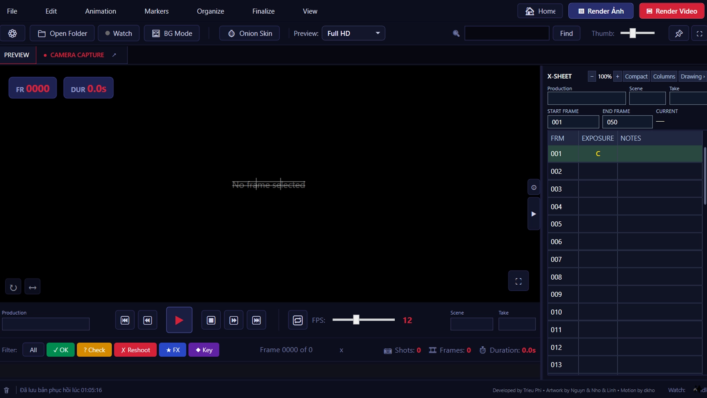
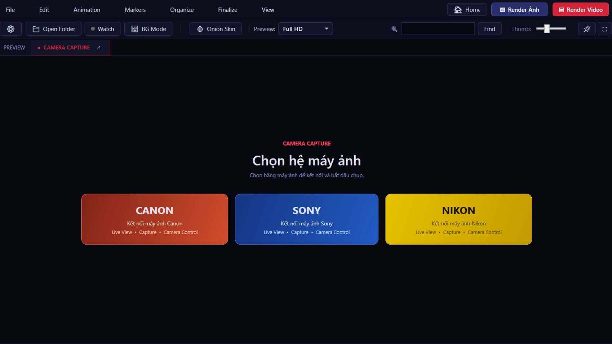
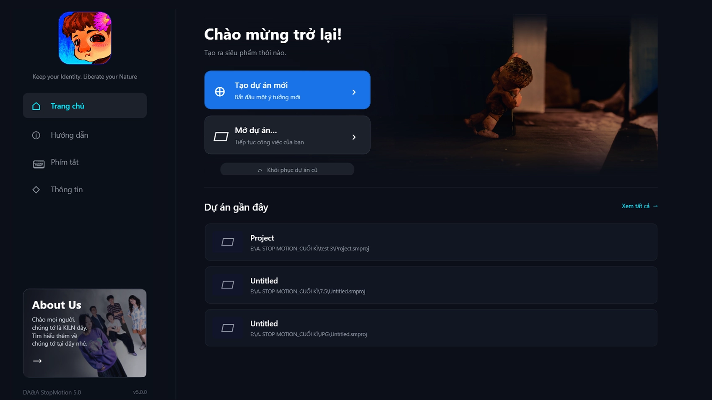
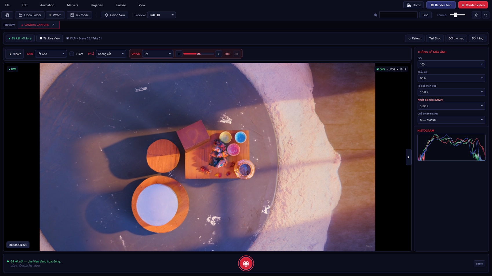
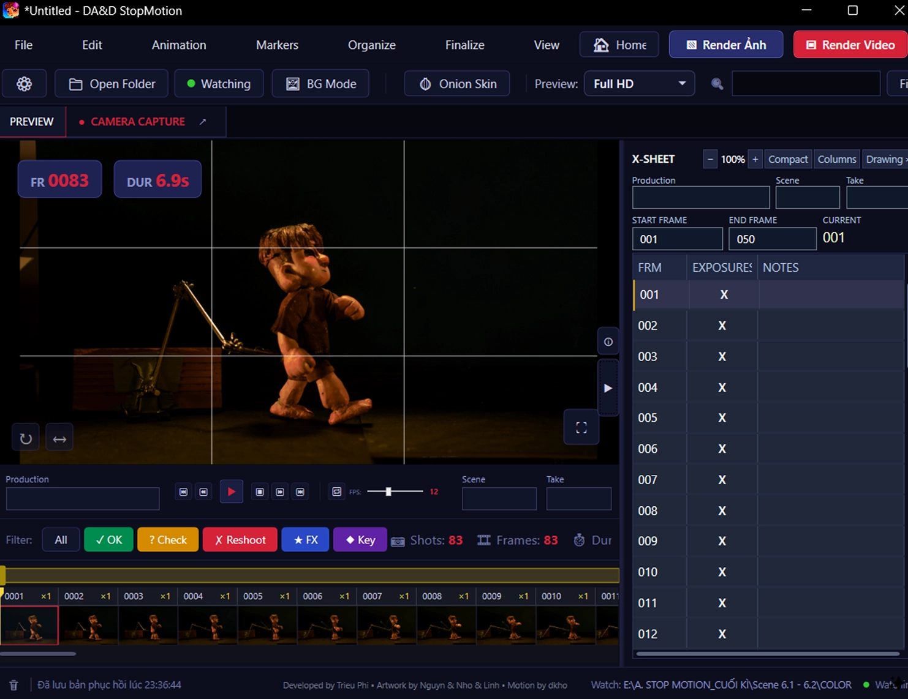

Xin hân hạnh giới thiệu
DA&DStopMotion
Phần mềm giúp bạn chụp, xem trước và quản lý từng khung hình một cách dễ dàng và trực quan nhất.
Keep your Identity. Liberate your Nature.
Từ frame đến chuyển động.
Những công cụ quan trọng xuất hiện cùng nhau trong một không gian làm việc.




Một nhịp làm việc xuyên suốt.
Capture → Animate → Review → Organize → Export.
- 01 / CAPTURE
Chụp
Chụp frame và giữ phản hồi production ngay trong tầm mắt.
- 02 / ANIMATE
Animate
Kiểm soát timing và spacing từng frame.
- 03 / REVIEW
Review
Xem lại chuyển động và continuity.
- 04 / ORGANIZE
Tổ chức
Giữ shot, take và file nguồn rõ ràng.
- 05 / EXPORT
Export
Chuẩn bị material hoàn thiện cho hậu kỳ.
Một công cụ.
Nhiều góc nhìn.
Những lời chia sẻ từ người làm chuyển động.
BẢN MẪU · 5 hồ sơ và nhận xét minh họa, chưa phải đánh giá thực tế.Kéo hoặc vuốt để khám phá · Chọn một góc nhìn
Tải DA&D StopMotion bản Beta
Tải bản Beta từ Google Drive để trải nghiệm DA&D StopMotion.

Moving stories.
Các phiên bản trước
Các bản cũ vẫn được giữ để tương thích. Phiên bản hiện tại là bản Beta.
KILN
KILN là nhóm phát triển đứng sau DA&D StopMotion. Phần mềm được xây từ trải nghiệm stop-motion, làm phim và mỹ thuật số thực tế thay vì từ một mẫu productivity chung chung.